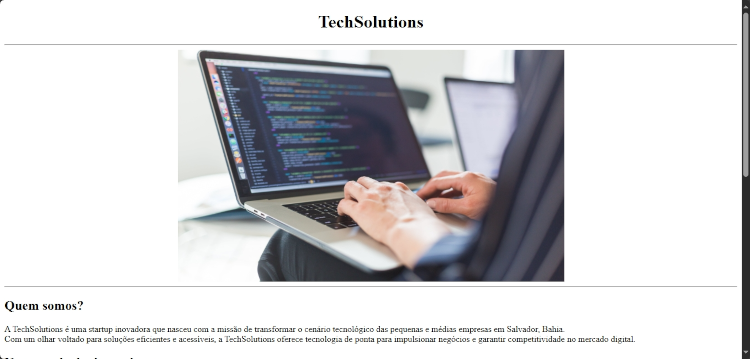

PROJETO TECHCONNECT.
O projeto TechConnect é um website bem simples, utilizando os conceitos apenas de HTML a pedido do tutor de meu curso. A ideia era fazer um site para uma empresa de tecnologia fictícia usando apenas as tags de HTML. Confira todas as nuâncias desse projeto acessando o repositório dele no GitHub.
